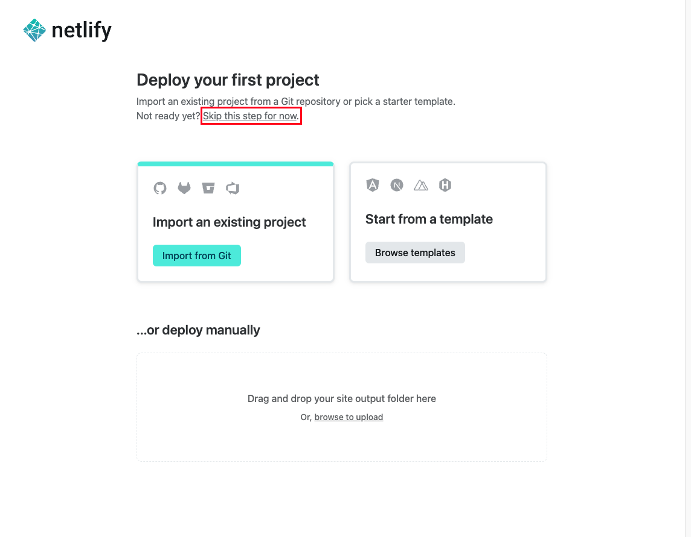
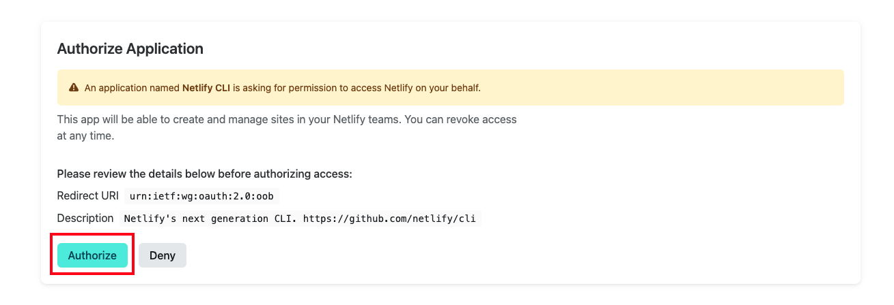

The goal of this exercise is to deploy a static website (only HTML,
JavaScript and CSS) on the Netlify PaaS instead of your own server in the
Infrastructure-as-a-Service (IaaS) Microsoft Azure Web Services cloud.
This exercise assumes that you are familiar with the command line and Git.
On this pageTable of contents
Legend
Parts of this exercise are annotated with the following icons:
A task you MUST perform to complete the exercise
Optional step that you may perform to make sure that
everything is working correctly, or to set up additional tools that are not required but can
help you
Advanced tips on how to go further (or
challenges!)
The end of the exercise
The architecture of the software you ran or
deployed during this exercise
Troubleshooting tips: how to fix common problems you might
encounter
Once you are done with the registration, you will be asked to deploy your first
project. You can either try it out or skip this step:

Netlify is a popular hosting platform for static sites, which are
websites that are composed of HTML, CSS, and JavaScript files that are served to
the client exactly as they are stored on the server. Netlify provides a range of
features and tools to help developers build, deploy, and manage static sites,
including:
Continuous deployment: Netlify automatically builds and deploys your
static site whenever you push updates to a repository. This makes it easy to
keep your site up to date without having to manually build and deploy it.
SSL/TLS certificates: Netlify provides free SSL/TLS certificates (obtained
from Let’s Encrypt) to secure your site with HTTPS.
Global CDN: Netlify uses a global content delivery network (CDN) to serve
your static site from various locations around the world, which can improve
the performance and availability of your site.
Overall, Netlify is a powerful and convenient platform for hosting and managing
static sites, with a range of features that make it easy to build, deploy, and
optimize your project.
You will be using the Netlify CLI to deploy your site. With the Netlify CLI, you
can create new sites, deploy updates to your existing sites, set up continuous
deployment, manage your team’s access to sites, and more, directly from the
command-line.
Install Node.js and the Netlify CLI
Install Node.js
For this exercise you will be using a command-line tool created by Netlify. You
will need to install Node.js to use this CLI. The easiest way to do so, is to
head to the Node.js Downloads and choose the appropriate
installer for your machine.
Node.js is a JavaScript runtime built on Chrome’s V8 JavaScript engine.
It allows developers to execute JavaScript code on the server side, rather than
just in a web browser. This enables the creation of server-side applications
with JavaScript, which was previously not possible.
Node.js also includes a large and growing library of open source packages
(called “modules”) that can be easily installed and used in Node.js
applications, making it easy to add functionality without having to build it
from scratch.
Node.js has become popular for creating web servers and building scalable
network applications, as it is able to handle a large number of concurrent
connections with high throughput. It is often used in combination with other
tools and frameworks, such as Express.js, to build web applications and APIs.
Advanced
Installing Node.js this way can cause headaches down the road. It is good
practice to use version managers instead. One of the main benefits is the
ability to easily switch between different versions of Node.js. This is
particularly useful when working on projects that require a specific version of
Node.js, or when testing how a project works with different versions of Node.js.
A version manager also allows you to have multiple versions of Node.js installed
on the same machine, which can be useful for developing and testing applications
that need different versions of Node.js. Here are a few Node version managers:
asdf & mise (also support other platforms than Node.js)
Optional: check your Node.js installation
To make sure Node.js is installed, try the following:
$>node-v
v24.11.0
Install Netlify CLI using npm
$>npminstall-gnetlify-cli
added1437packages,andaudited1438packagesin15s
Troubleshooting
See the troubleshooting section if you get an EACCES
error.
Tip
You can check the installation by executing:
$>netlify-v
netlify-cli/17.38.0darwin-arm64node-v22.10.0
npm (short for Node Package Manager) is a package manager for
JavaScript. It is the default package manager for Node.js. npm provides a way to
install and manage packages (libraries, frameworks, tools, etc.) that you can
use in your own projects. When you install a package using npm, it installs the
package in the current working directory, in a subdirectory called
node_modules. If you want to use the package in your project, you can import
it in your code.
In this case, you installed a global module, since you want to access the
Netlify CLI from anywhere. Global modules are installed globally, which means
they are available to use in any project on your computer. You can install a
global module using the -g or --global option of the npm install command.
Authenticate Netlify CLI
You need to link the Netlify CLI to your Netlify account. To do so, run:
This will open a page in your browser window asking you to authorize the Netlify
CLI to access your account:

Once you click authorize, you should see the following in your Terminal:
YouarenowloggedintoyourNetlifyaccount!
Runnetlifystatusforaccountdetails
Toseeallavailablecommandsrun:netlifyhelp
Launch!
Make sure you are in the static-clock-website directory and run:
$>netlifyinit
Follow the configuration assistant by reading carefully and entering the
relevant options. At some point, a GitHub authorization page will open in your
browser.
Warning
Use the default options except for the site name. The site name must be
unique across all Netlify deployments, so you must choose a name that has not
already been used by someone else.
?Whatwouldyouliketodo?+Create&configureanewsite
?Team:JohnDoe's team
? Site name (leave blank for a random name; you can change it later): jde-static-clock-website
(node:57377) ExperimentalWarning: The Fetch API is an experimental feature. This feature could change at any time
(Use `node --trace-warnings ...` to show where the warning was created)
? Your build command (hugo build/yarn run build/etc): # no build command
? Directory to deploy (blank for current dir): .
? No netlify.toml detected. Would you like to create one with these build settings? Yes
Adding deploy key to repository...
Deploy key added!
Creating Netlify GitHub Notification Hooks...
Netlify Notification Hooks configured!
Success! Netlify CI/CD Configured!
This site is now configured to automatically deploy from github branches & pull requests
Next steps:
git push Push to your git repository to trigger new site builds
netlify open Open the Netlify admin URL of your site
If you visit the URL printed in your terminal, you should be able to witness
the static clock website up and running!
Optional: push a change and witness continuous deployment!
Open the static-clock-website website in your code editor and make a change.
For example, change the background-color property on the <body> element in
the style.css file.
Stage, commit and push the changes to your GitHub repository:
$>gitadd.
$>gitcommit-m"New body background color"
$>gitpush
After a few seconds, the changes should be visible at the Netlify URL!
What have I done?
In this exercise, you deployed a static website to Netlify PaaS using the
Netlify CLI. Netlify automatically configured the following stuff for you:
Hosting
Reverse proxying
TLS/SSL encryption
Automated deployments
Domain name
Pretty cool, for the price of free. We have just scratched the surface of
what Netlify can do, so feel free to explore the platform further.
Troubleshooting
Here’s a few tips about some problems you may encounter during this exercise.
EACCESS error
If you get an EACCES error when running an npm install command with the
-g or --global option, it may be because the default global installation
directory used by Node.js is owned by root.
Execute the following commands to switch to a directory owned by you:
$>mkdir~/.npm-global
$>npmconfigsetprefix'~/.npm-global'
You should now add the new npm global installation directory to your path. The command will depend on what shell you are using. Find out with: